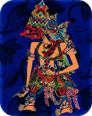
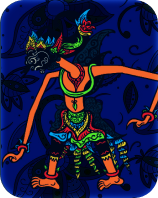
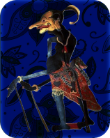

.png)

Rahwana

Gatotkaca
Hanuman

Petruk
Rahwana
Gatotkaca
Hanuman
Petruk


Batik is a cultural and identity medium that reflects social status, philosophical values, and holds high artistic and economic value.

Motif Lasem
The combination of butterflies and flowers in Lasem batik represents beauty, freedom and the continuing cycle of life.

Motif Pesisir
This Pesisir Motif depicts the natural beauty of the beach with bright colors and dynamic patterns.

Megamendung Abstract
A modern variation that combines the Mega Mendung motif with abstract elements.

Motif Semen Rama
The Semen Rama motif represents fertility and growth, as well as the eternal beauty of nature.

Sagon Sidoluhur
The regular and repeating geometric patterns in this motif can symbolize the order of the universe and the repeating cycle of life.

Motif Ceplok Grompol
The round shape in the ceplok motif is often associated with fertility and prosperity
Batik motifs are artistic patterns that reflect the beauty of nature, philosophy of life and culture of society. This motif includes geometric elements, flora, fauna, and other traditional symbols, such as parang, kawung, and slope motifs, each of which has its own meaning and is often used in various traditional ceremonies.
See More
This technique uses a stamp made of copper, shaped according to the desired pattern or motif.

A combination of several batik-making techniques, usually blending hand-drawn (tulis) and stamped (cap) batik.

A modern technique to speed up batik production, using a printing machine to directly print patterns onto fabric.

The most traditional batik-making technique involves creating patterns directly on fabric using a canting tool and hot wax..
Wayang is not just a form of entertainment, but also a medium for education and the dissemination of moral and religious values. In every performance, wayang conveys important messages that reflect the richness of Indonesian culture, imparting wisdom through meaningful stories.


To convey stories from epics like the Ramayana, Mahabharata, and local tales, serving as entertainment and moral education.
Wayang Kulit
To narrate Hindu epics, local legends, and Islamic stories, delivering moral and religious messages.
Wayang Golek
To depict epic stories like the Mahabharata and Ramayana, and local tales, for entertainment and moral education.
Wayang Beber
To bring to life epics like the Mahabharata, Ramayana, and local stories through dance, serving entertainment, education, and cultural preservation.
Wayang WongThe uniqueness of wayan resides in its attributes have many with symbolism, from sharp nails to majestic clothing, each detail reflecting rofound character and philosophical values

Rapékan is a cloth worn by knights or important figures in war. It symbolizes physical strength and courage.

Makuta or crown symbolizes power, majesty, and the highest position, usually used by kings or gods.

Dridji Wanara symbolizes the strength and courage of a monkey in facing challenges and protecting the truth.

Mata keran or squint eye are a reflection of a straight character and always keep the direction of vision. The faucet eye shape is owned by Gareng puppet characters.

The Denawa grip is a large and strong hand shape, often used by giant figures (denawa). This grip symbolizes strength, cruelty, and terrifying nature.

In the character of Radjwa Denawa (Rahwana), Kelat Bau symbolizes giant strength, anger, and great power.
Wayang is a cultural heritage rich in diverse stories, including great epics like the Mahabharata and Ramayana, as well as local tales like Wayang Panji. The Mahabharata tells of a family conflict between the Pandavas and Kauravas, filled with lessons about truth and justice. Meanwhile, the Ramayana follows Rama’s journey to rescue his wife, Sita, from Ravana, teaching loyalty and sacrifice. On the other hand, Wayang Panji shares the love story and adventures of Panji and Dewi Sekartaji, reflecting the values of Javanese society. Together, these stories show the depth and variety of wayang, illustrating different aspects of human life.